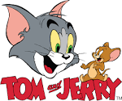

Tom & Jerry is an animated cartoon character co-created in 1928 by Walt Disney and Ub Iwerks.
The longtime mascot of The Walt Disney Company, Mickey is an anthropomorphic mouse who typically
wears red shorts, large yellow shoes, and white gloves. Taking inspiration from silent film
personalities such as Charlie Chaplin's Tramp, Mickey is traditionally characterized as a
sympathetic underdog who gets by on pluck and ingenuity.[2] The character’s status as a small
mouse is personified through his diminutive stature and falsetto voice, the latter of which was
originally provided by Disney. Mickey is one of the world's most recognizable and universally
acclaimed fictional characters of all time.
